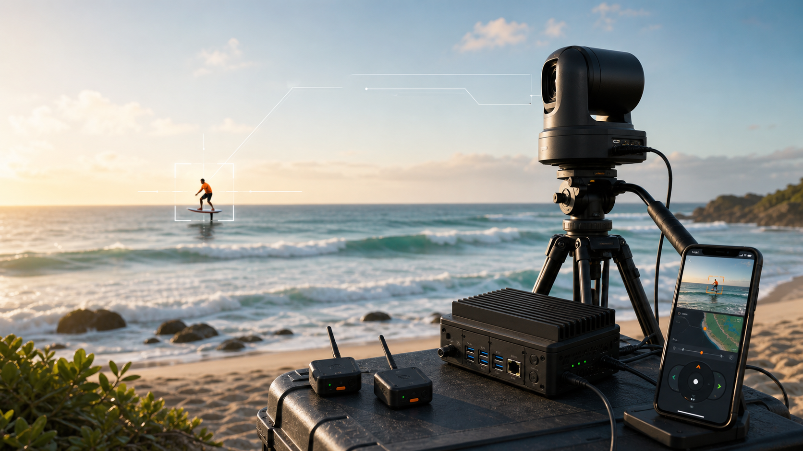
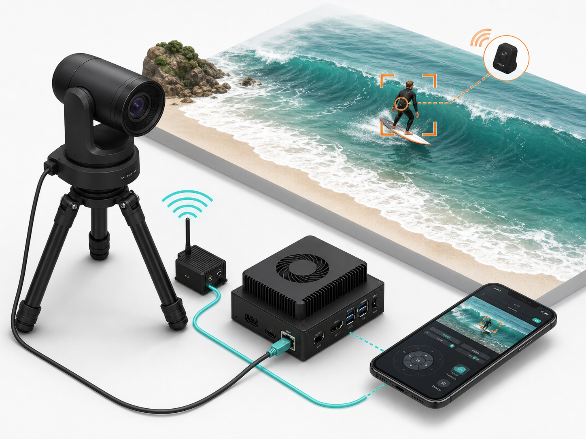
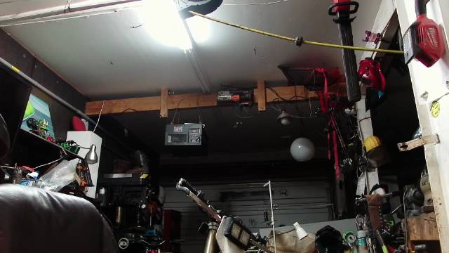
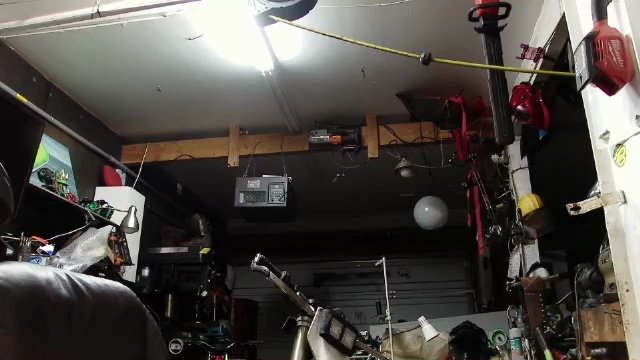

Vision-primary tracking
Person detection and optional color cueing work together. Position data helps point and reacquire; vision owns framing when the rider is visible.
WaveCam is a beach-side autonomous camera system for foil surfing, wing foiling, and tow sessions. It follows the rider, manages framing, and keeps operator control on a phone.

WaveCam trims the system down to the parts that matter in the field: camera movement, target detection, status visibility, and reliable capture.
Person detection and optional color cueing work together. Position data helps point and reacquire; vision owns framing when the rider is visible.
The system drives a professional pan-tilt-zoom camera directly, with smooth motion, optical zoom, and fast stop controls for field operation.
Long-range position cues help the camera aim before the rider is large enough for vision-only tracking, then vision refines the frame.
Start follow, stop follow, preview the feed, nudge the camera, check system health, monitor storage, and see current tracking state.
A local compute unit runs the camera loop, vision tracking, recording control, and operator dashboard without depending on cloud processing.
Only one tracking mode owns camera movement at a time. Manual override and emergency stop controls stay explicit and visible.
Ask the on-device agent for help from the dashboard — it inspects status and advises by default. An operator ARM toggle (off by default, auto-expiring) can grant it supervised control to act through the control API. KILL is human-only and always disarms it.
WaveCam combines optical tracking, local processing, rider position cues, and a phone-friendly control surface into one beach setup.

PTZ camera, field computer, and local network are arranged as a simple beach-side station with separate internet access when needed.
Vision tracks the rider when visible. Position cueing helps reacquire at range, during spray, or when the rider leaves the frame.
The native iOS app keeps setup and operation out of the terminal across five tabs — Live (preview, camera movement, and follow controls, now merged with the old PTZ tab), Calibrate, Tools, Connect, and Media — covering preview, camera movement, follow mode, health, recording, and status. A watchOS companion rides along.
Designed around the real setup sequence: power it, see if it is healthy, aim it, start it, ride.
Tripod on the beach, camera connected, field computer powered, dashboard reachable, and internet available when streaming is needed.
The dashboard checks camera route, preview, service state, recording space, and whether any tracker already owns PTZ.
Single-screen flow: set location + height (base-relative or sea-level datum), set heading by hand (the phone magnetometer is unusable near the motor), then aim on the Live feed and Capture or multi-point Refine (least-squares offset) before Validate and Confirm. Calibration validity is session-scoped and resets on a service restart.
Vision follow tracks the rider, adjusts framing, and avoids zoom hunting when confidence drops.
WaveCam shows the operator what the camera sees and what the tracker is using to make framing decisions.

Live preview helps the operator confirm aim, exposure, subject visibility, and camera health before entering the water.

Vision overlays make tracking state inspectable, so setup errors and poor target contrast are visible before the session depends on them.
The system is built from field-serviceable parts with visible health, explicit controls, and predictable failure handling.
WaveCam is designed around a field routine that can be repeated quickly without opening a laptop.
Set the tripod, connect the camera and field computer, confirm the phone dashboard, and verify storage before the session starts.
Walk the calibration flow (location + height with a chosen datum, operator-set heading, live aiming, multi-point refine, validation) and confirm it commits. Confirm KILL stops motion, manual nudge works, tracking.mode toggles, and /status authority section shows correct gate inputs.
Validate direct-LoRa at 50/150/300 m, confirm calibration at real beach range, and exercise auto-framing end-to-end. Vision lock with GPS fallback; verify base drift monitor holds the lock through a bumped-tripod test.
After water-test validation: enable tracking features one by one (GPS zoom, bearing cue, persistent tracker), run full auto-framing, and keep KILL within reach at all times.